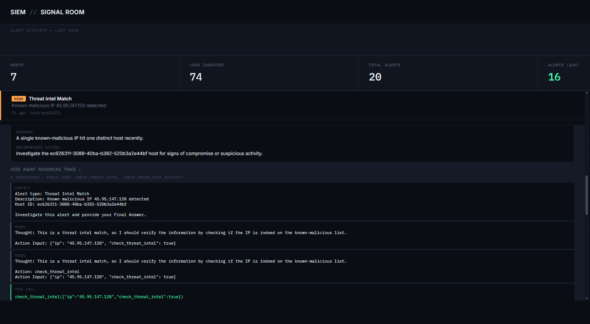
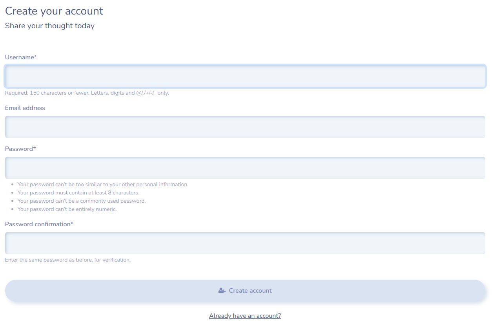
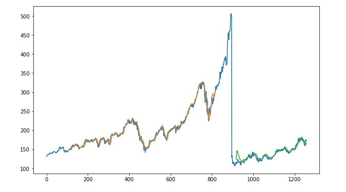
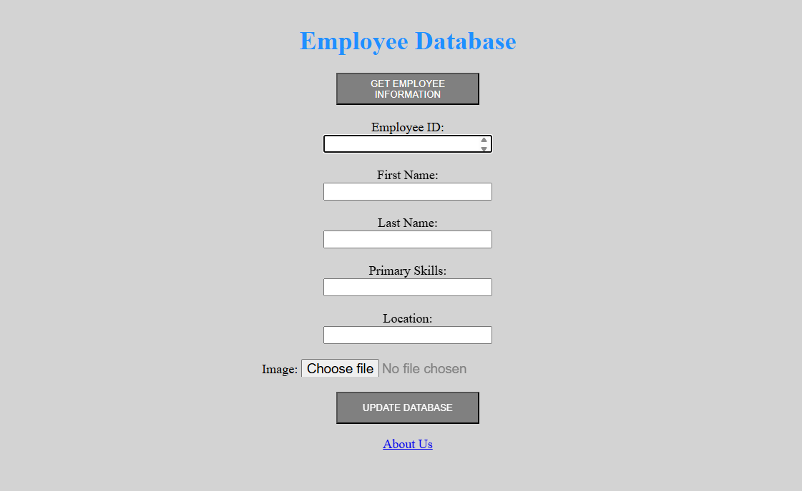

Nathan Charles Lopes
Software Developer | Cybersecurity & ML background
IT graduate student at the University of Melbourne. I build systems that detect, investigate and explain, like a full-stack SIEM with AI-driven alert triage and a behaviour-based mobile app. Just as comfortable using the tools an attacker would as I am writing the backend code they're up against.
- locationMelbourne, VIC 3053
- roleSoftware Developer
- focusCybersecurity · ML · Full‑stack
- degreeM.IT (Cybersecurity), 11/2026
- stackPython · FastAPI · Django · Docker
- toolsNmap · Wireshark · Metasploit · Burp
01About
I'm an IT graduate student at the University of Melbourne specialising in cybersecurity, with hands-on experience across Python, web development, and offensive/defensive security tooling, including Wireshark, Nmap and Metasploit. My flagship project is a full-stack SIEM platform that pairs detection engineering with an AI agent for alert investigation, and I'm actively looking for an IT internship where I can apply both sides of that skill set: shipping software and thinking like an attacker to make it safer.
02Experience
IT Support
06/2022 – 01/2025James Battery · Part Time · Mumbai
- Supported end-to-end IT operations, including website development and maintenance.
- Set up and configured office systems, including computers, routers and internet connectivity.
- Assisted with database / data entry tasks and digital record management.
- Helped implement basic security infrastructure, including CCTV setup and monitoring support.
- Provided general IT troubleshooting and technical support across office systems.
National Service Scheme, Volunteer
07/2022 – 07/2024Fr. Conceicao Rodrigues College of Engineering · Mumbai
- Organised campus cleanliness drives and blood donation drives.
- Taught underprivileged children and led a 5-member student team.
03Education & Certifications
Master of Information Technology
Specialisation: Cybersecurity · The University of Melbourne
WAM: 76.30 / 100
Bachelor of Computer Engineering
Honors in Cyber Security · Fr. Conceicao Rodrigues College of Engineering, Mumbai University
CGPA: 9.36 / 10

Custom SIEM
Security Information & Event Management Platform
A decoupled SIEM backend that ingests logs, correlates events, and raises alerts. Pairs with a locally-run LLM agent that investigates alerts on its own using read-only tool calls.
click to expand ↻Custom SIEM
A hands-on Security Information & Event Management lab
Built from scratch to understand detection engineering under the hood, rather than clicking around someone else's Splunk or Sentinel dashboard. That meant designing the log schema, writing the correlation logic, and reasoning about false positives, alert fatigue, and time-window sizing directly.
Architecture
- Ingest (FastAPI): deliberately "dumb and fast". Parses structured fields and stores them, with no detection logic on the request path.
- Detection worker: a separate process polling PostgreSQL every 10s, running every rule per host plus one fleet-wide cross-host check per cycle.
- LLM triage (Ollama, local): generates a plain-English summary, severity, and recommended action per alert, with no external API and no log data leaving the machine.
- Storage: PostgreSQL via SQLAlchemy, indexed on the columns each detector filters and groups by.
- Deployment: fully containerized, with the API, worker, Postgres, and Ollama running as independent Docker Compose services.
Detections mapped to MITRE ATT&CK
| Brute Force Attempt | T1110 |
| Rapid Brute Force (2-min window) | T1110 |
| Successful Brute Force | T1110 → T1078 |
| Threat Intel Match | T1071 |
| Cross-Host Brute Force (fleet-wide) | T1110 |
| Web Reconnaissance (404 scanning) | T1595.003 |
| Elevated Server Error Rate | anomaly, no direct mapping |
Agentic investigation
Beyond single-shot triage, a hand-rolled ReAct loop lets the model decide
what context it needs, call a read-only tool, observe, and repeat, up to a hard 5-iteration cap.
Tools: get_recent_logs, check_threat_intel,
check_cross_host_activity, get_host_info. Every thought, tool call, and
observation is persisted, so the reasoning trace is fully auditable and never a black box.
Notable engineering decisions
- Polling worker over a message queue: right-sized for the log volume. A broker would add infrastructure without a latency win that matters here.
- Local LLM over a hosted API: free, and security telemetry never leaves the machine.
- Hand-rolled ReAct loop over a framework: surfaced and let me fix a real bug where the model could fabricate a fake tool-call transcript.
TrueMatch
Behaviour-Based Matching System
An Android app that matches people using real-world behavioural data, like smartphone sensors and activity patterns, instead of static profiles.
click to expand ↻TrueMatch
Dynamic compatibility scoring from sensor data
Rather than matching on a static profile, TrueMatch computes a dynamic compatibility score from behavioural signals: steps, location, app usage, and sleep. The goal is a more authentic read on compatibility than a swipe-based profile gives.
Architecture
- Android app: Kotlin + Jetpack Compose client handling registration, auth, and on-device sensor data collection.
- Firebase: Authentication plus Firestore for structured/derived data storage and real-time sync.
- Backend server: processes behavioural data, computes matching scores, and writes updated metrics back to Firestore.
My role
Built as a 6-person university group project (Group 2). I contributed to the behavioural data pipeline connecting Firestore-stored sensor data to the backend scoring service.
Team
Zijun Xing · Shasha Wu · Zherui Wang · Yash Arjun Aslekar · Nathan Charles Lopes · Karl Jorge Cleres Andreo
view repository →Group repository, hosted under a teammate's GitHub account.

Edenthought
Personal Journal Web App
A full-stack Django journaling app with registration, authenticated dashboards, CRUD entries, and email notifications on sign-up.
click to expand ↻Edenthought
Django journaling app with authenticated dashboards
Users register, log in, and create, update, or delete journal "thoughts" from a secure dashboard, with a profile picture and email notification on registration.
Features
- Create / update / delete journal thoughts, scoped to the logged-in user
- Registration, login, logout, and password reset
- Profile management with profile picture uploads (Pillow)
- Email notification on new registration
- Forms styled with django-crispy-forms + Bootstrap 5
Key routes
/register | User registration |
/dashboard | Authenticated dashboard |
/create-thought | New journal entry |
/profile-management | Update profile & user info |
/reset_password | Password reset flow |
Deployment
Designed to run behind Gunicorn + NGINX, with DEBUG=False,
configured ALLOWED_HOSTS, and Postgres/MySQL swapped in for production in place of
SQLite.

Stock Price Prediction
Stacked LSTM Neural Network
A 3-layer stacked LSTM trained on historical AAPL prices to predict short-term trend, with a 30-day recursive forecast extension.
click to expand ↻Stock Price Prediction
Stacked LSTM on AAPL historical prices
A time-series forecasting notebook: pull historical AAPL closing prices via the Tiingo API, scale them, and train a stacked LSTM to learn the trend well enough to project 30 days forward.
Pipeline
- Data: daily AAPL closing prices via
pandas_datareader/ Tiingo API. - Scaling:
MinMaxScalerto [0, 1], since LSTMs are sensitive to input scale. - Windowing: 100-day lookback window reshaped to
[samples, timesteps, features]. - Split: 65% train / 35% test, preserving time order (no shuffling).
- Model:
LSTM(50) → LSTM(50) → LSTM(50) → Dense(1), Adam optimizer, MSE loss, 100 epochs, batch size 64.
Evaluation & forecasting
Performance measured with RMSE on both the train and test splits after inverse-transforming predictions back to price scale. A recursive forecasting loop then feeds each day's prediction back in as input to project the next 30 days beyond the available data.
add repository link →Not yet on a public repo. Link this once it's pushed.

Employee Management App
Flask App on AWS (RDS + S3)
A Flask app for adding employee records: form submissions get saved to a MySQL database on AWS RDS, and the employee's photo gets uploaded to an S3 bucket.
click to expand ↻Employee Management App
A cloud computing coursework project on AWS
A small Flask app built for a cloud computing course, focused on wiring a web form up to real AWS infrastructure rather than a local database. Submitting the form writes the employee record to RDS and pushes their photo to S3, then shows a confirmation page with the employee's name.
What it does
- Form to add a new employee: ID, first name, last name, primary skill, location, and photo
- Saves the record to a MySQL
employeetable on RDS - Uploads the photo to an S3 bucket
- Shows a confirmation page once the record and photo are saved
Built with
- Flask: routes for the home page, the add-employee form, and an about page.
- MySQL on AWS RDS: connected via PyMySQL for the insert.
- AWS S3: connected via boto3 to store the uploaded photo.
- Jinja2 templates: for the form and confirmation pages.
Security notes
Documented in the README as known limitations to fix before this goes anywhere
public: the RDS and AWS credentials in config.py are hardcoded and need to move to
environment variables or a secrets manager, Flask's debug=True needs to come off,
and the form inputs aren't validated before hitting the database yet.
05Contact
Based in Melbourne, VIC. Happy to talk about SIEM and detection engineering, full-stack roles, or anything in between.
download résumé